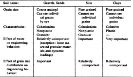
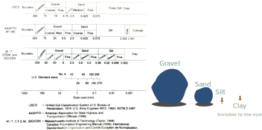
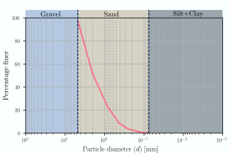

Course contents and schedule
Recap
- We discussed phase diagrams and their use.
- Three possible saturation states: Dry, partially saturated, and fully saturated.
- We learned to measure soil voids using void ratio and porosity.
- We learned to measure water in soils using saturation, gravimetric, and volumetric water content.
- We derived expressions relating unit weights, saturation, void ratio, and water content.
- Today we will learn about sieve analysis and Atterberg limits.
Homework assignment 2
- Due on 02/07/2022.
- 80 points total.
- Start ASAP.
Contents
- Sieve and hydrometer analysis
- Grain size distribution (GSD)
- GSD metrics
- Specific surface
- Clay mineralogy
- Atterberg limits and activity
- Soil classification
More in chapter 2 and 4 of Holtz et al. (2013)
Grain size characteristics
Grain size characteristics
Sieve analysis (ASTM D6913)
- Conducted on dry sample. Particles of different sizes are separated by meshes.
- Conducted for coarse soils only (gravels and sands \( d>0.075 \) mm or sieve No 200).
- The individual weight retained in sieve \( i \) is measured (\( W_i \)).
- The percentage retained or coarser than sieve \( i \) is \( R_i=\sum W_i /W_t \).
- The percentage passing or finner than sieve opening \( i \) is \( P_i=100-R_i \).
| U.S. Standard | Sieve Opening |
| Sieve No. | (mm) |
| 4 | 4.75 |
| 10 | 2 |
| 20 | 0.85 |
| 40 | 0.425 |
| 60 | 0.25 |
| 100 | 0.15 |
| 140 | 0.106 |
| 200 | 0.075 |
Example 2.4
| Sieve Opening | Weight | Retained | Passing |
| (mm) | (g) | (%) | (%) |
| 4.75 | 12.5 | ||
| 2 | 233.67 | ||
| 0.85 | 144.13 | ||
| 0.425 | 75.75 | ||
| 0.25 | 25.47 | ||
| 0.15 | 10.14 | ||
| 0.106 | 5.5 | ||
| 0.075 | 1.7 | ||
| Pan | 1 | ||
| Total | 509.86 |
Example 2.4
Hydrometer analysis
- Separation of particles by sedimentation (Stokes law).
- Relative density of suspended flow is measured in time to determine particle diameter.
- Works for fine soils (\(d < 0.075\)mm or passing No 200).
- Has several limitations due to unrealistic assumptions.

Example 2.5: Combined GSD
Sieve analysis
| Sieve Opening | Weight | Retained | Passing |
| (mm) | (g) | (%) | (%) |
| 4.75 | 0 | 0.0% | 100.0% |
| 2 | 12.12 | 3.6% | 96.4% |
| 0.85 | 25.36 | 11.2% | 88.8% |
| 0.425 | 32.15 | 20.8% | 79.2% |
| 0.25 | 33.14 | 30.7% | 69.3% |
| 0.15 | 33.78 | 40.8% | 59.2% |
| 0.106 | 47.56 | 55.0% | 45.0% |
| 0.075 | 50.14 | 70.0% | 30.0% |
| Pan | 100.25 | 100.0% | 0.0% |
| Total | 334.5 |
Hydrometer analysis
| Part. Diameter | Percentage Finer |
| (mm) | % |
| 0.066 | 85% |
| 0.045 | 74% |
| 0.036 | 68% |
| 0.025 | 58% |
| 0.015 | 48% |
| 0.011 | 42% |
| 0.007 | 35% |
| 0.005 | 28% |
| 0.004 | 24% |
| 0.003 | 20% |
| 0.0018 | 16% |
| 0.0012 | 12% |
GSD metrics

GSD metrics
GSD metrics
According to its gradation:
- If GSD is vertical soil is uniform, or poorly graded, or well sorted.
- If GSD spans all ranges of soil in a smooth curve the soil is well graded or poorly sorted.
- If there is a horizontal line in the GSD, the soil is gap graded.
Soil fractions
- Gravel fraction \(G_F\) is the cumulative retained percentage in Sieve No 4 or \(d>4.75\) mm.
- Fine fraction \(F_F\) is the portion of soils that passes Sieve No 200.
- Sand fraction \(S_F=100-G_F-F_F\) is the percentage of soil that passes Sieve No 4 and is retained in sieve No 200 or \(0.075< d \leq 4.75\) mm
- Clay fraction \(C_F\) is the portion of soils finer than 2 \(\mu\)m.
GSD metrcis
Let's define \(D_x\) as the particle size for which \(x\) percent of soil is finer thant that diameter.
Common values are:
- \(D_{10}\) also known as the effective diameter.
- \(D_{30}\).
- \(D_{50}\) or median particle size.
- \(D_{60}\).
Gradation coefficients:
- Coefficient of uniformity \(C_u\): $$C_u=\cfrac{D_{60}}{D_{10}}$$
- Coefficient of curvature \(C_c\): $$C_c=\cfrac{D_{30}^2}{D_{10}D_{60}}$$
Example 2.6
Determine the the soil fractions and gradation coefficients of soils 1, 2, and 3.
Particle shape

Particle shape

Specific surface
Specific surface is defined as: $$SSA= S_a/ M$$ \(S_a\)= Surface area. \(M\)= mass

- Coarse particles have lower \(SSA\) than fine particles.
- A high \(SSA\) means more chemical and physical reactions.
- A high \(SSA\) means more area for drag. Finer soils are less permeable than coarse soils.
Clay mineralogy
- Chemical weathering of rocks form phyllosilicates (hydrous aluminum silicates).
- Only visible with electron microscope and look like plates, flakes, or needles.
- Two simple blocks: tetrahedral silica and octahedral alumina.
- The main blocks are arranged in various ways to produce clay minerals.

Clay mineralogy


Interaction of clay with water

- Stronger influence for minerals with large \(SSA\).
- Interaction of negatively charged particle with water and cations will increase/decrease the diffuse double layer thickness.
- Changes in the DBL thickness can be seen macroscopically as swelling and shrinkage.
- Interaction with water also causes changes in consistency of fine soils.
Consistency limits
- Also known as Atterberg limits after the soil scientist who proposed them.
- They are thresholds of water content at which the behavior of fine soils changes.
- From experimentation he found three limits: the liquid limit \(LL\), plastic limit \(PL\), and the shrinkage limit \(SL\).
Liquid limit ASTM D4318
- Arthur Casagarnde proposed the modern test procedures.
- He defined \(LL\) as the water content at which a standard groove cut in the soil will close 0.5 in at 25 blows.
- Values from zero to 1000. Most soils have \(LL\) less than 100.


Plastic limit ASTM D4318
- Defined as the water content at which a thread of soil just crumbles when rolled to a diameter of 3 mm.
- Requires more practice to obtain consistent and reproducible results.
- Ranges from zero to 100. Most soils have \(PL < 40\).


Shrinkage limit ASTM D4943

Consistency indices
Plastic index:
Is the range of water content in which the fine fraction of soils behaves as a plastic material. $$PI=LL-PL$$
Liquidity index:
This is a scaling parameter that maps the natural water content in constrast with the consistency limits. $$LI=\cfrac{w_n-PL}{PI}$$

Activity of clays
Relates the plasticity index and the clay fraction of soils. $$A=\cfrac{PI}{C_F}$$ \(A\) is highly correlated to clay mineralogy.
| Mineral | Activity |
| Na-montmorillonite | 4-7 |
| Ca-montmorillonite | 1.5 |
| Illite | 0.5-1.3 |
| Kaolinite | 0.3-0.5 |
| Hallosyte (dehydrated) | 0.5 |
| Hallosyte (hydrated) | 0.1 |
| Attapulgite | 0.5-1.2 |
| Allophane | 0.5-1.2 |
| Mica (muscovite) | 0.2 |
| Calcite | 0.2 |
| Quartz | 0 |
Example 2.7
For the parameters shown in the table, compute \(LL\), \(PI\), \(LI\), and \(A\).
LL results.
| Blow count \(N\) | \(w \%\) |
| 55 | 23.5 |
| 43 | 27.9 |
| 22 | 36.4 |
| 15 | 45.3 |
- \(PL=12 \% \)
- \(C_F=13 \% \)
- \(w_n=38\% \)
Soil classification
Unified soil classification system (USCS) ASTM D2487.
Input parameters:
- Soil fractions (\(G_F, S_F, F_F\)).
- Coefficient of uniformity (\(C_u\)).
- Coefficient of gradation or curvature (\(C_c\)).
- Liquid limit (\(LL\)).
- Plastic index (\(PI\)).
- Plasticity chart.
Output:
- Group symbol.
- Group name.
Group symbols
- Two letters
- First letter \(\longrightarrow\) dominant fraction.
- Second letter \(\longrightarrow\) minor fraction
- Dominant fraction
- Coarse (retained in sieve No 200).
- Gravel (G), sand (S).
- Fines (passing sieve No 200).
- Silt (M), clay (C), organic content (O).
- Coarse (retained in sieve No 200).
- Minor fraciton
- Coarse, depending on well/poorly-graded (W, P) and fines (M, C).
- Fine, depending on low/high plasticity (L,H).
Plasticity chart

Classification flow diagram
If \(F_F \geq 50\%\)

If \(F_F< 50\%\)

Example 2.8

Example 2.9

Example 2.10